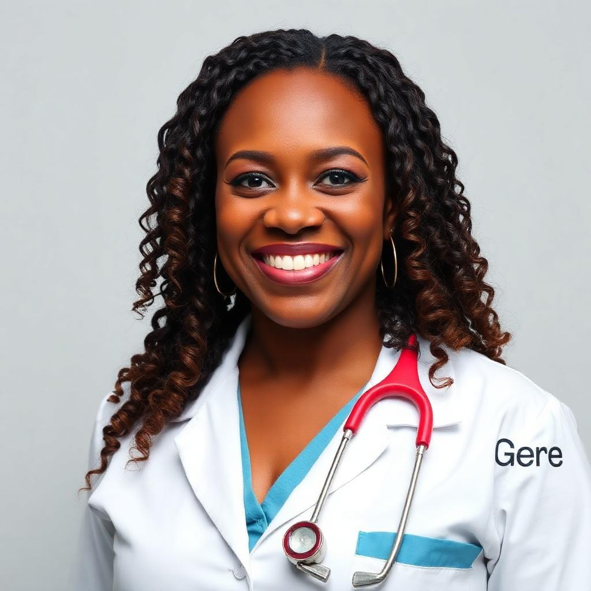
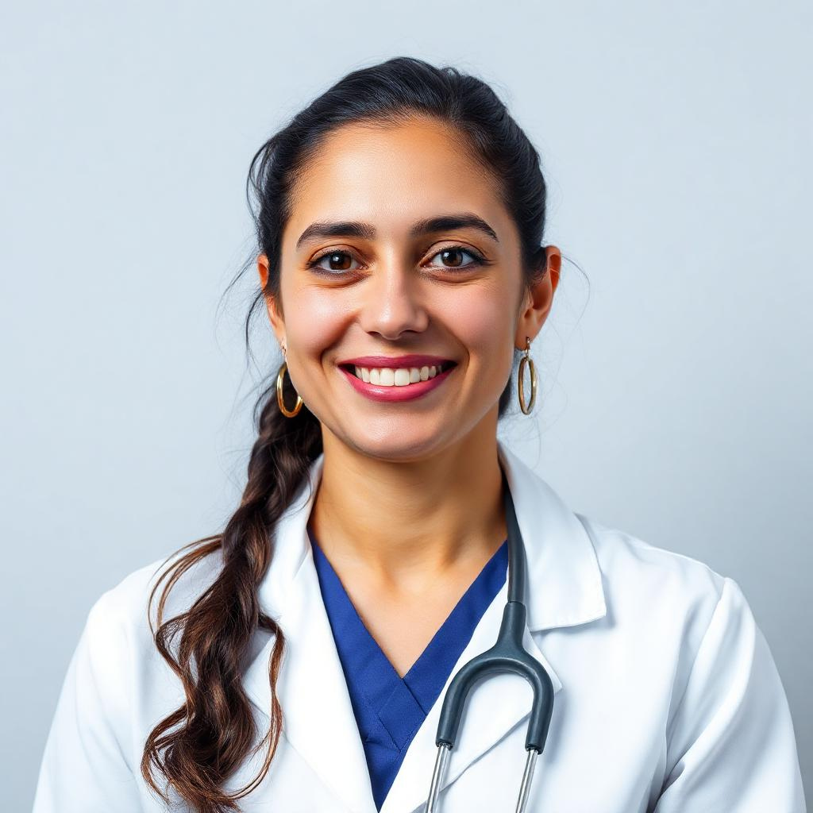

Professores
Beatriz
Cirurgiã
Especializada em Cirurgia Bucomaxilofacial, a Dra. Beatriz atua no diagnóstico e tratamento de traumas, deformidades e patologias complexas da face, como fraturas, cistos e tumores. Realiza procedimentos de alta precisão, incluindo cirurgias ortognáticas (correção de deformidades ósseas) e implantes dentários avançados, integrando saúde funcional e estética. Com expertise em reconstrução facial pós-trauma ou câncer, alia tecnologia 3D e planejamento digital para resultados personalizados. Seu foco é restaurar não apenas sorrisos, mas qualidade de vida, com abordagem humanizada e multidisciplinar.
Saiba MaisGrazielly
Anestesista
Especializada em sedação consciente e anestesia odontológica, a Dra. Grazziely garante conforto e segurança em procedimentos cirúrgicos bucais, como extrações complexas e implantes. Domina técnicas avançadas de bloqueio nervoso e controle de ansiedade, adaptando protocolos para pacientes com necessidades especiais ou fobias. Seu trabalho permite tratamentos indolores e eficientes, reduzindo traumas e melhorando a experiência clínica.
Saiba MaisHenrique
Endodontista

Com expertise em tratamento de canal, o Dr. Henrique atua no diagnóstico e solução de infecções pulpares, utilizando microscopia operatória e técnicas de desinfecção avançada. Seu trabalho preserva dentes naturais, evitando extrações, com procedimentos precisos e minimamente invasivos. Focado em alívio da dor e recuperação funcional, alia tecnologia e abordagem humanizada para resultados duradouros.
Saiba MaisLetícia
Ortodontista

Com expertise em alinhamento dentofacial, a Dra. Letícia corrige má oclusões e harmoniza sorrisos usando técnicas como aparelhos fixos, alinhadores invisíveis e ortopedia funcional. Seu trabalho vai além da estética, melhorando função mastigatória e saúde bucal, com planos personalizados para crianças, adolescentes e adultos. Combinando tecnologia digital e abordagem humanizada, transforma sorrisos com resultados precisos e duradouros.
Saiba Mais